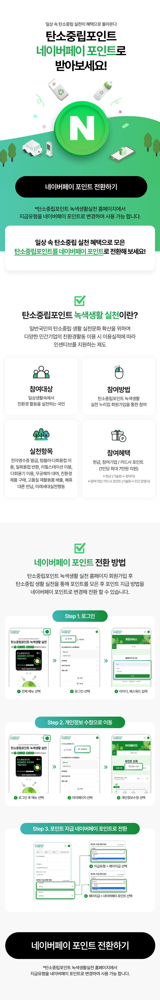

네이버페이 × 탄소중립포인트 캠페인 페이지
환경부 탄소중립포인트 녹색생활 실천 사업과 네이버페이의 협업 캠페인 페이지입니다. 사용자가 일상 속 탄소중립 활동(전자영수증·다회용기· 무공해차 등)으로 적립한 포인트를 네이버페이 포인트로 전환받을 수 있도록 안내하는 이벤트 랜딩 페이지로, 다양한 연령대가 진입하는 공공 캠페인 특성상 복잡한 전환 절차를 누구나 이해할 수 있도록 단계별 정보 설계가 핵심이었습니다.
모바일 세로 스크롤에 최적화된 1단 레이아웃으로 구성했으며, 헤더에는 캠페인 핵심 메시지와 네이버 시그니처 N 마크 + 일러스트레이션을 결합해 시각적 진입점을 강하게 잡았습니다. 본문은 '제도 소개 → 참여 방법 → 단계별 전환 가이드 → CTA' 흐름으로 구성하여 사용자가 페이지를 스크롤하는 동안 자연스럽게 행동으로 이어지도록 설계했습니다. 단계별 안내는 실제 모바일 UI 캡처를 가공해 사용자가 마주칠 화면을 미리 시각화했고, 상단·하단 두 곳에 CTA 버튼을 배치해 페이지 어디서든 즉시 전환 동작으로 이어지도록 했습니다.
녹색 톤 메인 컬러로 환경 캠페인 정체성을 명확히 하면서도 카드형 컴포넌트와 둥근 모서리·풍부한 여백으로 친근한 인상을 유지했습니다. 디자인 시안에서 끝나는 작업이 아니라 반응형 HTML/CSS 퍼블리싱까지 단독으로 완성해, 모바일·태블릿·데스크톱 환경에서 일관된 사용자 경험을 제공하도록 마무리한 풀스택 작업입니다.
복잡한 전환 절차를 누구나 이해하도록 단계별로 정리하는 방향으로
누구나 스크롤로 따라오는 흐름
실제 UI 캡처를 가공해 미리 시각화
녹색 톤 + 카드형 컴포넌트로 친근한 인상
페이지 어디서든 즉시 전환 가능

